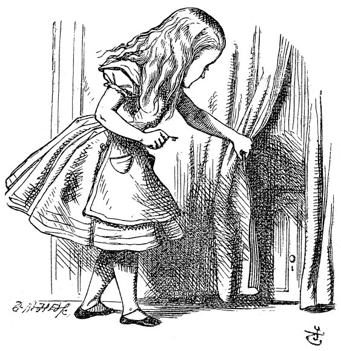

trying every door, she walked sadly down the middle, wondering how she was ever to get out again.
Suddenly she came upon a little three-legged table, all made of solid glass; there was nothing on it except a tiny golden key, and Alice's first thought was that it might belong to one of the doors of the hall; but, alas! either the locks were too large, or the key was too small, but at any rate it would not open any of them. However, on the second time round, she came upon a low curtain she had not noticed before, and behind it was a little door about fifteen inches high: she tried the little golden key in the lock, and to her great delight it fitted!
Alice opened the door and found that it led into a small passage, not
much larger than a rat-hole: she knelt down and looked along the passage into the loveliest garden you ever saw. How she longed to get out of that dark hall, and wander about among those beds of bright flowers and those cool fountains, but she could not even get her head through the doorway; 'and even if my head would go through,' thought poor Alice, 'it would be of very little use without my shoulders. Oh, how I wish I could shut up like a telescope! I think I could, if I only knew how to begin.' For, you see, so many out-of-the-way things had happened lately, that Alice had begun to think that very few things indeed were really impossible.
There seemed to be no use in waiting by the little door, so she went back to the table, half hoping she might find another key on it, or at any rate a book of rules for shutting people up like telescopes: this time she found a little bottle on it, ('which certainly was not here before,' said Alice,) and round the neck of the bottle was a paper label, with the words 'DRINK ME' beautifully printed on it in large letters.
It was all very well to say 'Drink me,' but the wise little Alice was not going to do THAT in a hurry. 'No, I'll look first,' she said, 'and see